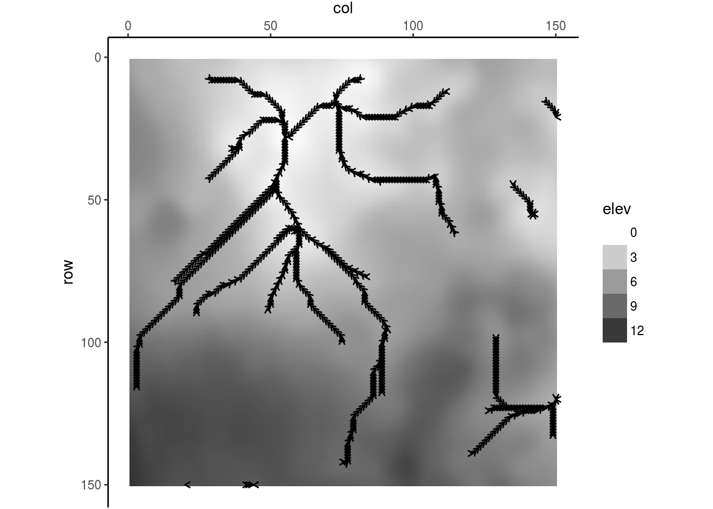

Flow Plots
Steffi LaZerte
2018-04-09
Flow plots are simply a way of visualizing what LITAP is doing under the hood.
In the following examples, we will be using the output from the supplied “testELEV.dbf”. You can find these files in the LITAP folder by using the system.file() function:
library(LITAP)## Loading required package: magrittrfiles <- system.file("extdata", "final", package = "LITAP")
list.files(files, full.names = TRUE)## [1] "/home/steffi/R/x86_64-pc-linux-gnu-library/3.4/LITAP/extdata/final/testELEV_dem_fill.csv"
## [2] "/home/steffi/R/x86_64-pc-linux-gnu-library/3.4/LITAP/extdata/final/testELEV_dem_fill.rds"
## [3] "/home/steffi/R/x86_64-pc-linux-gnu-library/3.4/LITAP/extdata/final/testELEV_dem_ilocal.csv"
## [4] "/home/steffi/R/x86_64-pc-linux-gnu-library/3.4/LITAP/extdata/final/testELEV_dem_ilocal.rds"
## [5] "/home/steffi/R/x86_64-pc-linux-gnu-library/3.4/LITAP/extdata/final/testELEV_dem_initial.csv"
## [6] "/home/steffi/R/x86_64-pc-linux-gnu-library/3.4/LITAP/extdata/final/testELEV_dem_initial.rds"
## [7] "/home/steffi/R/x86_64-pc-linux-gnu-library/3.4/LITAP/extdata/final/testELEV_dem_local.csv"
## [8] "/home/steffi/R/x86_64-pc-linux-gnu-library/3.4/LITAP/extdata/final/testELEV_dem_local.rds"
## [9] "/home/steffi/R/x86_64-pc-linux-gnu-library/3.4/LITAP/extdata/final/testELEV_dem_pit.csv"
## [10] "/home/steffi/R/x86_64-pc-linux-gnu-library/3.4/LITAP/extdata/final/testELEV_dem_pit.rds"
## [11] "/home/steffi/R/x86_64-pc-linux-gnu-library/3.4/LITAP/extdata/final/testELEV_dem_pond.csv"
## [12] "/home/steffi/R/x86_64-pc-linux-gnu-library/3.4/LITAP/extdata/final/testELEV_dem_pond.rds"
## [13] "/home/steffi/R/x86_64-pc-linux-gnu-library/3.4/LITAP/extdata/final/testELEV_fill.csv"
## [14] "/home/steffi/R/x86_64-pc-linux-gnu-library/3.4/LITAP/extdata/final/testELEV_fill.rds"
## [15] "/home/steffi/R/x86_64-pc-linux-gnu-library/3.4/LITAP/extdata/final/testELEV_ilocal.csv"
## [16] "/home/steffi/R/x86_64-pc-linux-gnu-library/3.4/LITAP/extdata/final/testELEV_ilocal.rds"
## [17] "/home/steffi/R/x86_64-pc-linux-gnu-library/3.4/LITAP/extdata/final/testELEV_initial.csv"
## [18] "/home/steffi/R/x86_64-pc-linux-gnu-library/3.4/LITAP/extdata/final/testELEV_initial.rds"
## [19] "/home/steffi/R/x86_64-pc-linux-gnu-library/3.4/LITAP/extdata/final/testELEV_local.csv"
## [20] "/home/steffi/R/x86_64-pc-linux-gnu-library/3.4/LITAP/extdata/final/testELEV_local.rds"
## [21] "/home/steffi/R/x86_64-pc-linux-gnu-library/3.4/LITAP/extdata/final/testELEV_pit.csv"
## [22] "/home/steffi/R/x86_64-pc-linux-gnu-library/3.4/LITAP/extdata/final/testELEV_pit.rds"
## [23] "/home/steffi/R/x86_64-pc-linux-gnu-library/3.4/LITAP/extdata/final/testELEV_pond.csv"
## [24] "/home/steffi/R/x86_64-pc-linux-gnu-library/3.4/LITAP/extdata/final/testELEV_pond.rds"We will load the rds file (R data files) for the relevant dems. Note that in each of these dem files, the only thing that differs is how the watersheds are almalgamated, and the different flow directions to make this happen.
initial_dem <- readRDS(list.files(files, pattern = "dem_initial.rds", full.names = TRUE))
local_dem <- readRDS(list.files(files, pattern = "dem_local.rds", full.names = TRUE))
pond_dem <- readRDS(list.files(files, pattern = "dem_pond.rds", full.names = TRUE))
fill_dem <- readRDS(list.files(files, pattern = "dem_fill.rds", full.names = TRUE))
inverted_dem <- readRDS(list.files(files, pattern = "dem_ilocal.rds", full.names = TRUE))
local_stats <- readRDS(list.files(files, pattern = "testELEV_local.rds", full.names = TRUE))Basic maps
By default, the flow_plot() function displays relief maps, using the terrain() and hillShade() functions from the raster package. Note the outer border of dark grey, this represents unknown cells, as the relief calculations do not work on cells without neighbours.
flow_plot(initial_dem)Alternatively, you can plot elevation data directly.
flow_plot(initial_dem, type = "elevation")
Subsets
You can zoom in on a particular area of interest by specifying row and column limits:
flow_plot(initial_dem, type = "elevation", rlim = c(20, 30), clim = c(35, 45))Cell numbering
You can number the cells in a plot with seqno = TRUE:
flow_plot(initial_dem, type = "elevation", rlim = c(20, 30), clim = c(35, 45),
seqno = TRUE)
If you’re only interested in certain cells, specify which ones with cells = c() and highlight = TRUE
flow_plot(initial_dem, type = "elevation", rlim = c(20, 30), clim = c(35, 45),
seqno = TRUE, cells = c(3187:3193, 3336:3343), highlight = TRUE)
Flow directions
You can plot individual flow directions with dir = TRUE.
flow_plot(initial_dem, type = "elevation", rlim = c(20, 30), clim = c(35, 45),
dir = TRUE)
In combination with cell numbers
flow_plot(initial_dem, type = "elevation", rlim = c(20, 30), clim = c(35, 45),
dir = TRUE, seqno = TRUE)Only for certain cells (this will show the entire flow path that a given cell is on)
flow_plot(initial_dem, type = "elevation", rlim = c(20, 30), clim = c(35, 45),
dir = TRUE, cells = c(3187:3193, 3336:3343))
Only for certain cells and show cell numbers
flow_plot(initial_dem, type = "elevation", rlim = c(20, 30), clim = c(35, 45),
dir = TRUE, seqno = TRUE, cells = c(3187:3193, 3336:3343))Highlight the cells of interest
flow_plot(initial_dem, type = "elevation", rlim = c(20, 30), clim = c(35, 45),
dir = TRUE, seqno = TRUE, cells = c(3187:3193, 3336:3343), highlight = TRUE)
Flow directions by upslope area
You can filter the flow directions to show only those with an upslope area greater than some threshold:
flow_plot(initial_dem, type = "elevation", dir = TRUE, upslope_threshold = 500)
Ridge Lines
To look at ridge lines, use the inverted dem files
flow_plot(inverted_dem, type = "elevation", dir = TRUE, upslope_threshold = 250)
Watersheds
You can also highlight watersheds
flow_plot(db = initial_dem, type = "elevation", shed = TRUE, shed_type = "initial")
Watershed pits
flow_plot(db = initial_dem, type = "elevation", shed = TRUE, shed_type = "initial",
pits = TRUE)Comparing watersheds at different stages of pit removal
- Initial = no removal
- Local = smoothing, only small pits removed
- Pond = looking at overflow in 2nd pit removal process
- Fill = looking at overflow in a second way in 3rd pit removal process